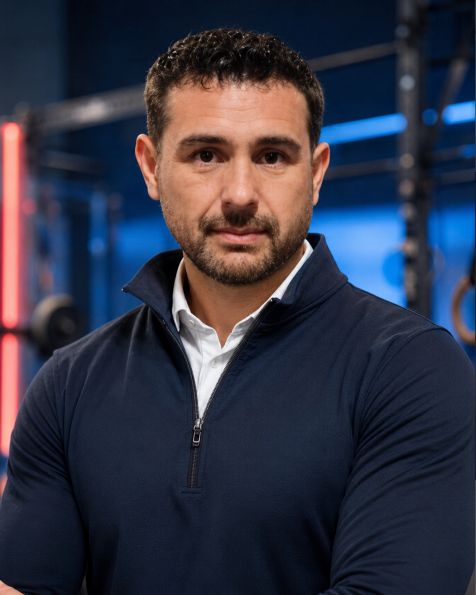

Portfolio deportivo
Sport
health & performance
Portfolio profesional con un perfil sólido, multidisciplinar y orientado a salud, rendimiento y gestión deportiva.
02

Ramón
Curbalán
Entrenamiento, nutrición deportiva, psicología aplicada al deporte y gestión de instalaciones deportivas.
Fitness
Nutrición
Psicología deportiva
Gestión deportiva
presentación ejecutiva
Un perfil deportivo con visión integral y criterio profesional.
Soy Ramón Alberto Curbalán Vega. Mi propuesta combina actividad física, acondicionamiento en sala, nutrición deportiva, psicología aplicada al rendimiento y gestión deportiva para construir procesos de mejora sólidos, realistas y sostenibles.
Propuesta de valor
No me limito a prescribir ejercicio o hábitos aislados. Integro entrenamiento, alimentación, seguridad, motivación y seguimiento para ayudar a personas, grupos e instalaciones a avanzar con método.
Fortalezas clave
- Base técnica en fitness, sala polivalente, musculación y entrenamiento funcional.
- Formación sólida en nutrición, dietética y coaching nutricional.
- Psicología deportiva, liderazgo, adherencia y dinámica de grupos.
- Visión de gestión, dirección y marketing aplicado al entorno deportivo.
Entrenamiento y fitnessProgramación de ejercicio, acondicionamiento físico, musculación y mejora progresiva de hábitos activos.
Nutrición y hábitosEducación alimentaria, nutrición deportiva, dietética y acompañamiento en adherencia.
Psicología deportivaMotivación, liderazgo, objetivos, confianza y enfoque mental aplicado al rendimiento.
Gestión deportivaDirección de instalaciones, planificación, marketing deportivo y visión estratégica del servicio.
formación acreditada
Formación visual, clara y potente.
Una combinación poco habitual: acondicionamiento físico, nutrición, psicología deportiva, seguridad, fútbol y gestión de instalaciones deportivas.
galería de certificados
Lectura visual de especialidades.
Resume de formación profesional especialización y valor de mi perfil.
Nutrición deportivaDietética, planificación nutricional, coaching nutricional y mejora de hábitos.
Actividad física adaptadaTercera edad, colectivos especiales, salud funcional y envejecimiento activo.
Fútbol y rendimientoPreparación física, planificación, readaptación y psicología aplicada al fútbol.
Seguridad deportivaSocorrismo, primeros auxilios, prevención de riesgos y respuesta inicial.
experiencia deportiva
Bloque de experiencia claro y creíble.
Además de la formación, esta es mi experiencia y aplicación profesional: entrenamiento, trabajo con grupos, entorno fitness, fútbol base, mayores y seguridad deportiva.
Entrenador y responsable de PreBenjamines
Colaboración en la formación integral del grupo en Club Esportiu Artà.
Acondicionamiento físico en sala polivalente
Programación, instrucción y dirección de actividades orientadas a salud y rendimiento.
Actividad física para tercera edad y colectivos especiales
Enfoque seguro, adaptado y centrado en movilidad, funcionalidad y adherencia.
Educación alimentaria y hábitos saludables
Base sólida en nutrición general, deportiva, dietoterapia y coaching nutricional.
Socorrismo y primeros auxilios
Actuación inicial, prevención y seguridad aplicada al entorno deportivo y acuático.
contacto profesional
Construyamos un proyecto deportivo con método y visión profesional.
Integro entrenamiento, nutrición, psicología deportiva y gestión para diseñar programas sostenibles de salud, rendimiento y bienestar. Puedo aportar valor en centros fitness, clubes deportivos, programas para mayores, fútbol base y proyectos orientados a la mejora de hábitos.